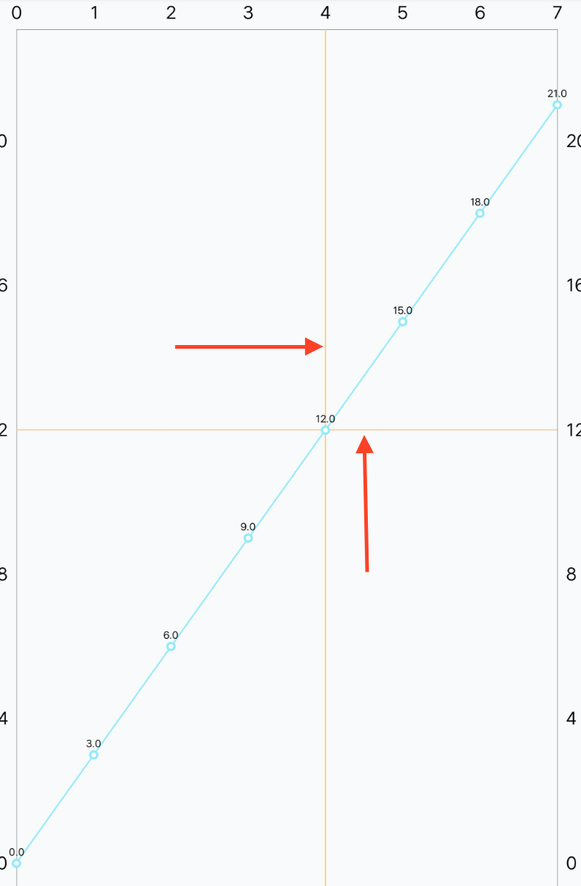
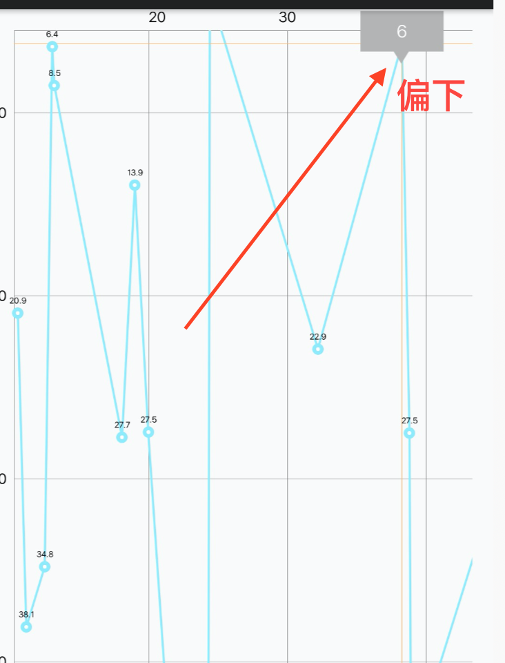
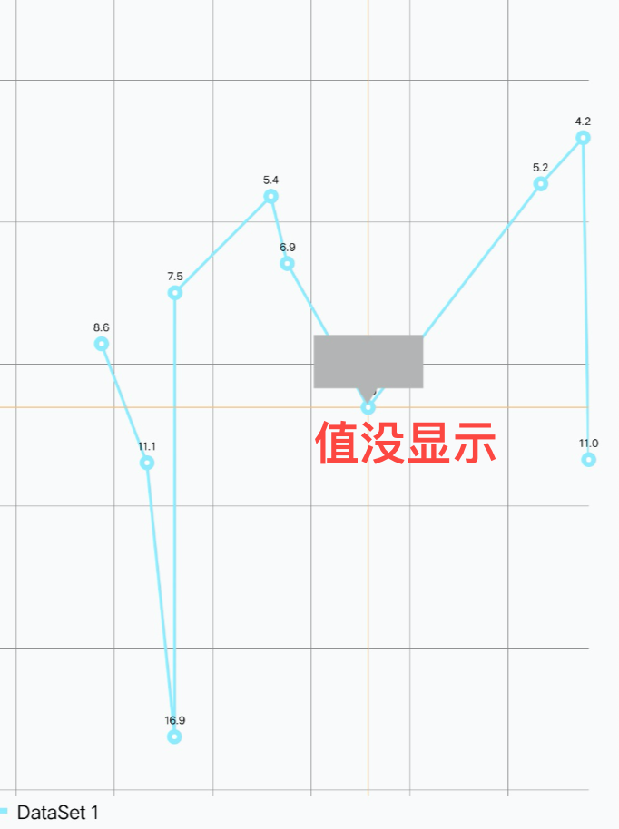
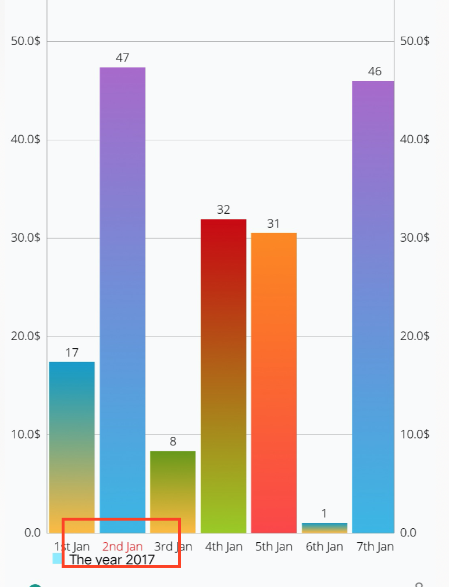
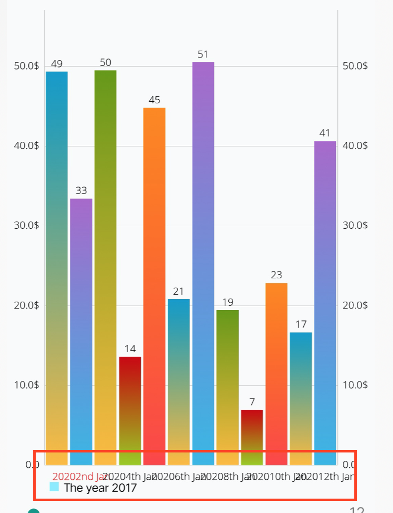
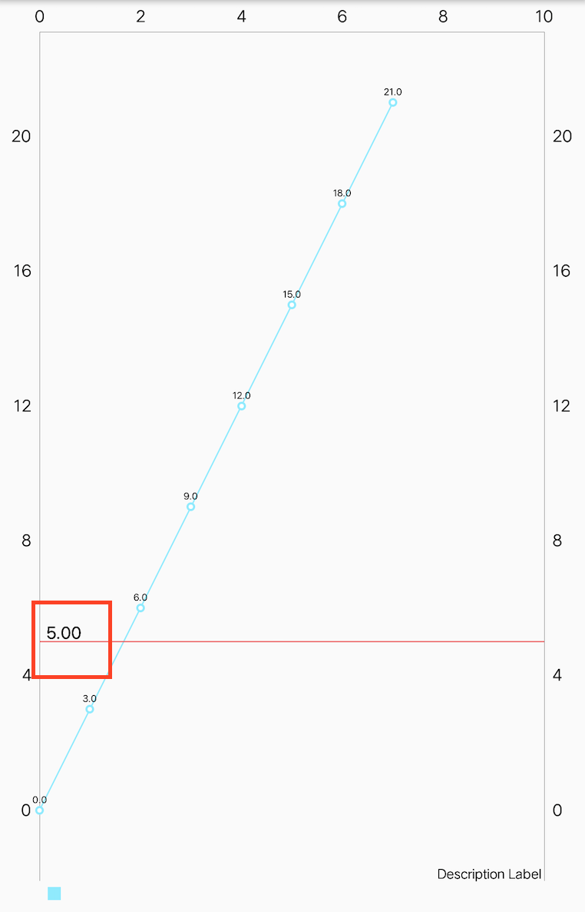

MPAndroidChart 使用总结
文章目录
前言
今年开工以来，一直接触图表相关的开发，经过选择最后采用 MPAndroidChart ，期间碰到了一些问题，踩了不少坑。特来总结一下，以免日后忘记。这些知识点虽然不难，但是非常零碎，找起来比较麻烦。
去除指示线
先来看一下怎么去除点击之后出现的指示线 
|
|
这里需要注意的是要在数据上设置，而不是在控件上设置，之前的文档都是在控件上设置，找了好久才发现 API 已经变化了。
设置 marker
顶部偏移

使用中碰到的问题是， marker 在最顶部的时候，显示的位置不能契合，通过给顶部设置偏移来保证显示的位置契合。
setExtraOffsets(0f,30f,0f,0f)
第一次不显示的问题

marker 的另外一个问题是， marker 第一次显示的时候，里面的数据没有被正确赋值。解决这个问题需要把赋值的代码放到 super.refreshContent(e,highlight) 之前。
|
|
坐标轴
X 轴
X 轴的文字显示不同的颜色

在开发的过程中，有个需求是需要对 X 轴上某个值显示特殊的颜色，查了文档发现只有一个 xAxis.textColor 是用来设置文字的颜色，所有的颜色都只能用这个颜色。
最开始我的想法是通过 ValueFormatter 在绘制的时候进行设置不同的颜色，后面发现不行。一路跟踪源码发现 X 轴上的内容是由 XAxisRenderer 绘制的，在其中找到了原因。发现是在绘制的时候会先给画笔设置颜色，之后就一直都用这个颜色。所以我们只是设置颜色是没有用的，画笔的颜色没有改变。
|
|
看到这，解决方案也就差不多出来了，在每次绘制 X 轴的文字时，我们主动设置画笔的颜色，这样就可以做到，绘制你想要的颜色。
|
|
通过这样设置，我们就可以在 X 轴的任何位置设置成你想要的颜色。
间隔

在给 X 轴设置文字的时候，文字的字数比较多的时候，就会导致文字会重叠。可以通过设置 chart.zoom(1.5f, 1f, 1f, 1f) 来提供更多的空间。
设置了 chart.zoom() 之后不要设置 chart.setVisibleXRangeMinimum 不然会没有效果。我在这里踩了个坑，以为有效，结果测老半天才发现，浪费了许多精力。
Y 轴
LimitLine 不显示
使用过程中还发现一个问题是，在 Y 轴上添加 LimitLine 有时候会不显示。不显示是没有给 Y 轴设置最大和最小值，在绘制的时候绘制到了不可见区域，因为我们的图表是不能缩放和拖动的。
|
|
为 LimitLine 设置设置偏移 2020-04-06 更新
在添加 LimitLine 时，线会从左边一直画到右边

但是我们碰到的需求是需要线从文字的结束开始绘制，如下所示
查找源码后发现，这些都是通过 YAxisRenderer 来绘制的，所以解决这个问题就很简单了，只要继承 YAxisRenderer 覆写 renderLimitLines 就行了。
|
|
最后别忘了通过设置 Y 轴的 Renderer 来实现效果
|
|
饼图 2020-04-06 更新
 图中红色圈出来的可以通过如下代码来设置
图中红色圈出来的可以通过如下代码来设置
|
|
holeRadius 使用的是百分比，一开始我使用具体数值，在地分辨率的手机上开起来就非常奇怪，别扭。